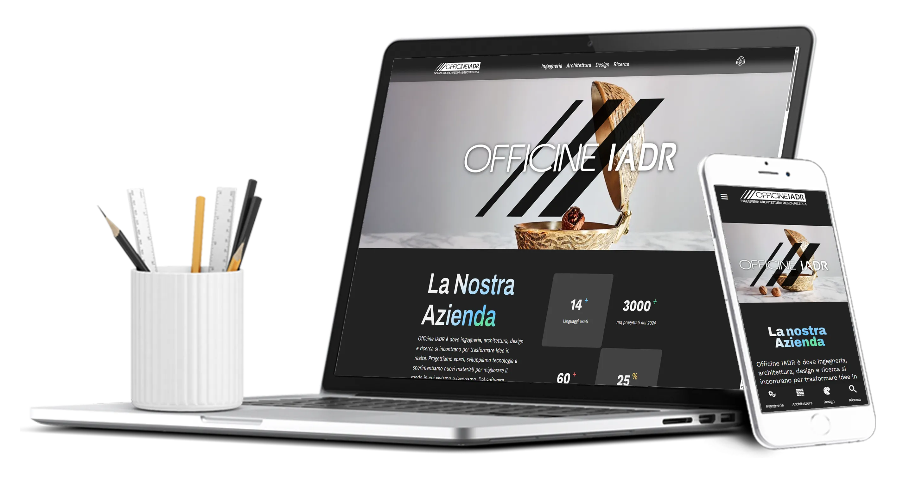
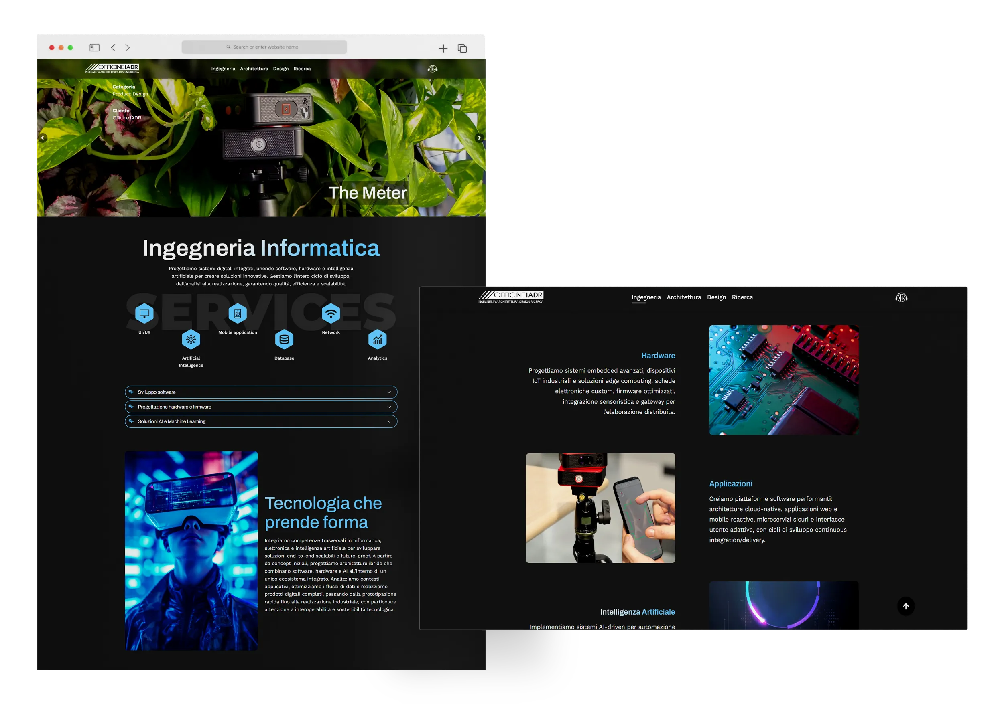
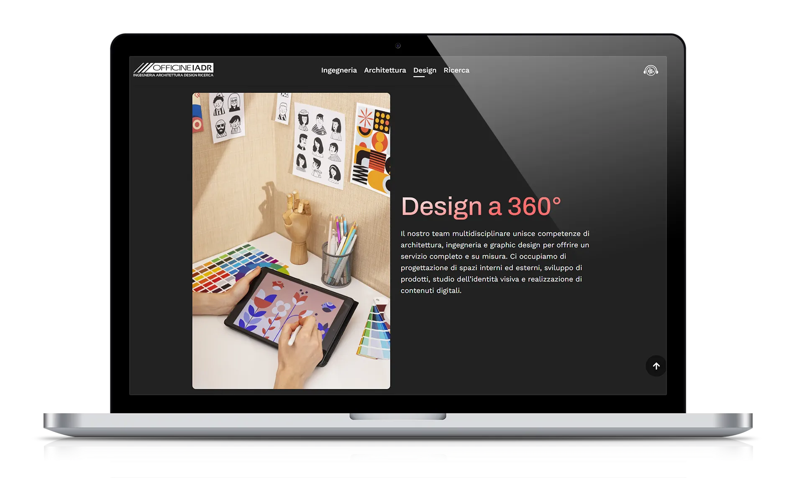
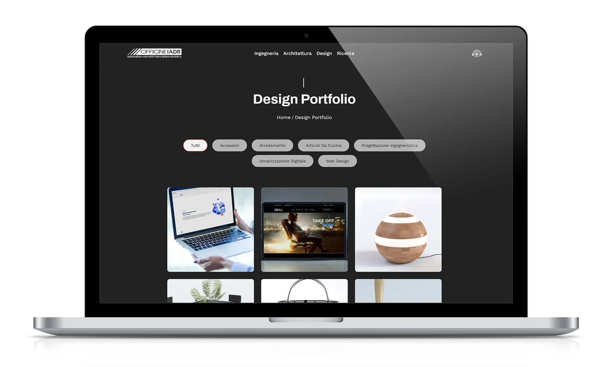
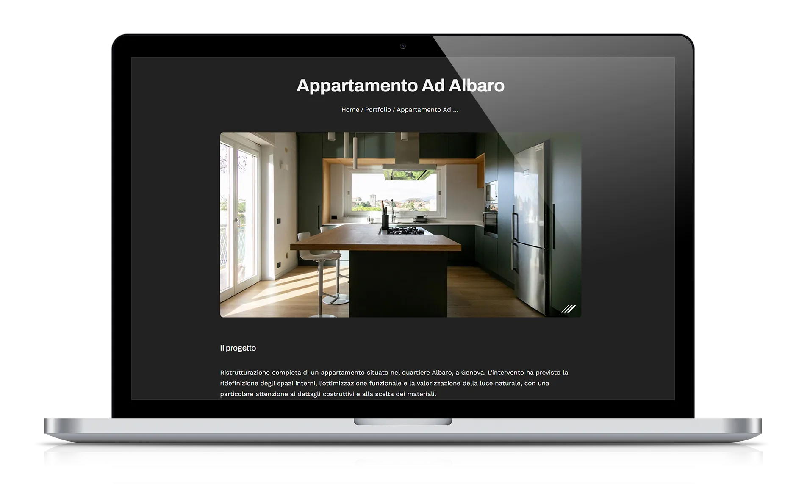
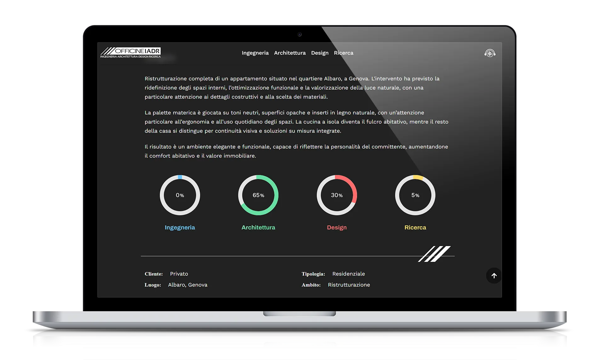

Officine IADR
Web Design

The interface was designed to convey professionalism and freshness through clean layouts, animations, and slideshows, in order to facilitate access to information.
The WordPress implementation included dedicated plugins and CSS customizations, ensuring an optimal balance between technical flexibility and aesthetic control.
The website hosts the company's portfolio, organized by categories, allowing clear navigation of the projects and offering users a pleasant and engaging experience.




